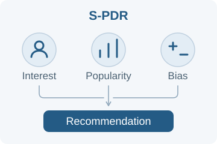

S-PDR: A Spectrally Regularized Personalized Debiasing Recommender Model
Third author · Second student author Submitted
Addresses popularity bias in sparse interaction settings by jointly modeling users’ semantic interests, personal popularity signals, and individual biases. Controllable interventions balance recommendation accuracy and exposure fairness.
Submitted to International Journal of Data Science and Analytics
Method
Models personal popularity through neighborhoods of similar users. A spectrally regularized hypergraph encoder and a disentangled predictor guided by explicit priors improve representation stability under sparse higher-order interactions and separate fine-grained bias signals.